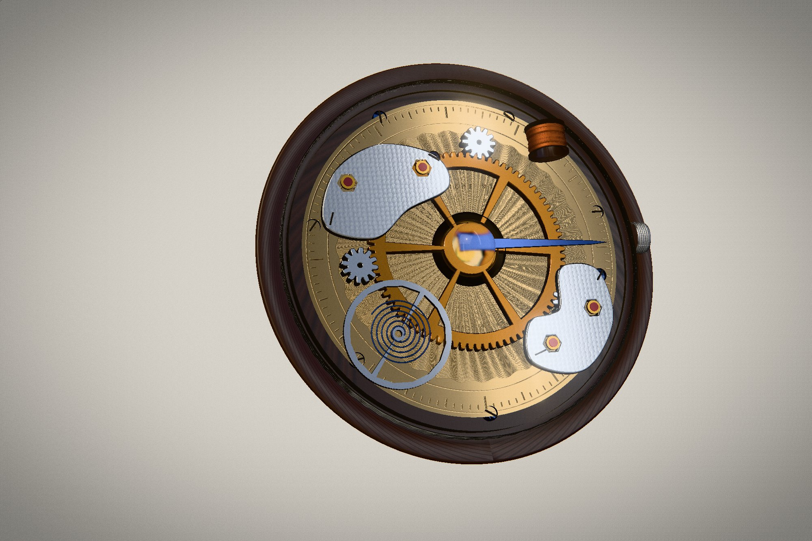

The brief pulled in two directions: more industrial than the last study, and warmer. Those fight each
other in most subjects, so the answer was to pick one where they have never been in conflict — a watch
movement, the densest piece of precision engineering that people still finish by hand.

Type
Concept · self-directed
Discipline
Real-time 3D · Web
Deliverables
Live scene, part index, case study
Payload
No models, no image files
The brief
A previous study grew an abstract specimen out of noise. Noise is the wrong tool here: it makes
organic things, and industry does not look organic. It looks like it was cut, faced, chamfered and
measured. But a page made only of that reads cold, and the brief asked for the opposite of cold.
A movement resolves it, because every industrial quality in it is there for a reason a person
decided — the tooth counts come from the ratio someone wanted, the bridges are shaped by hand
because they only have to clear the wheels, and the finishes exist purely so the thing is
beautiful inside a case nobody opens.
Design decisions
Real ratios, so the motion is honest
The great wheel has 80 teeth and each pinion 12, on a shared module, so the pinions sit at
the exact centre distance and turn 6.67 times per wheel revolution — backwards, as a driven
pinion must. Get that wrong and the eye notices before the mind does.
The finishes carry the hand
A guilloché rosette is engraved into the plate, perlage is ground across the bridges, and no
two screw slots sit at the same angle. Machines could make all three even. Nobody wants them
even — the unevenness is the signature.
Wood is what the hand touches
The metal is set into a turned walnut dish whose growth rings run oval, never round. It is
the one part of the object a person would actually hold, and it warms every metal around it.
How it is built
Wheels are extruded profiles: the tooth radius is a function of angle, sampled fourteen times per
tooth, with the crossings cut as annular holes and the whole thing bevelled — the chamfer is what
catches the light and says machined. Turned parts are lathe profiles written the way
you would sketch them on paper. The knurl on the bezel and crown is two opposing helical waves that
fade out before the ends, because a knurling wheel never runs into the chamfer.
The engraving is drawn to a canvas at load: the rosette is a family of epitrochoids, perlage is
overlapping ground circles, walnut is oval growth rings with a wobble summed from nine harmonics.
They arrive as roughness and bump maps, so the plate does not carry a picture of engraving — it
carries the light behaviour of it.
One directional light casts real shadows over the stack, which is the only thing that tells you a
bridge sits above a wheel and a wheel above the plate. The environment does the rest.
What got cut
An eight-bladed iris sat at the centre for four rounds. Physically it was fine; as an image it read
as a flower laid on top of a mechanism, and it competed with the wheels for the middle of the
frame. A dense object needs exactly one quiet focus, so the iris came out and a lens in a gold
bezel went in. The whole piece improved the moment something was removed rather than added.
Craft notes
Hovering any part names it and lifts it off the plate, the way you would pick it up with
tweezers; the index at the top right marks the same row, so the drawing and its key are one
document.
The callout points at the spot the ray actually struck, not at the part's origin — a bridge's
origin is the middle of the movement, and a leader line that always points there points at
nothing.
Small screens and coarse pointers get a smaller shadow map and a half-size transmission target;
portrait viewports recentre the instrument instead of cropping it.
prefers-reduced-motion stops the train, the balance and the grain.
Outcome
An instrument that is generated rather than shipped: thirteen named parts, five jewels, a hundred
and eighty engraved circles, and not one model or image file. Both halves of the brief hold at
once, because the subject was chosen so they would never have to argue.